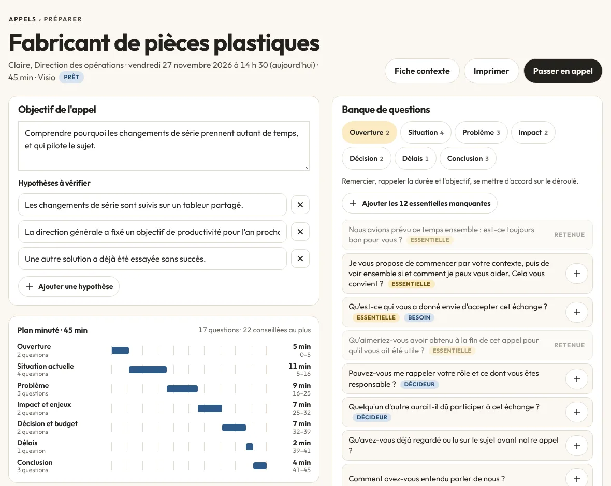
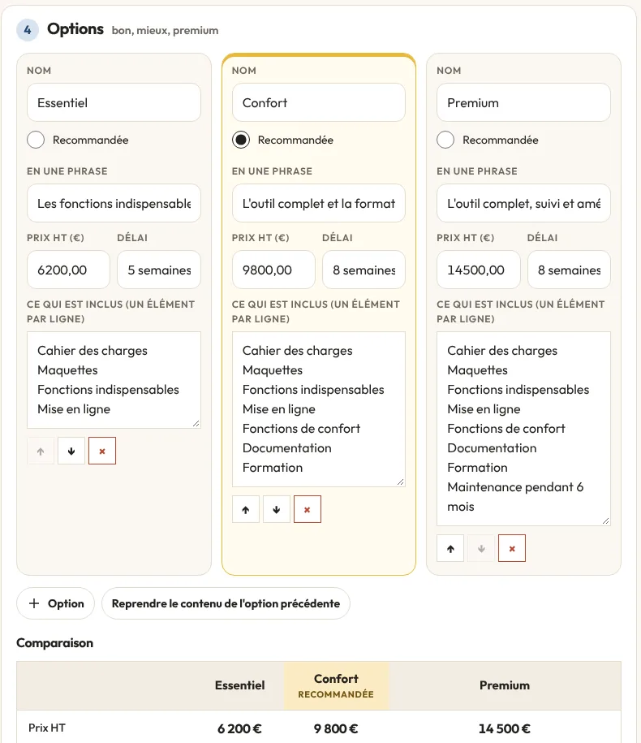
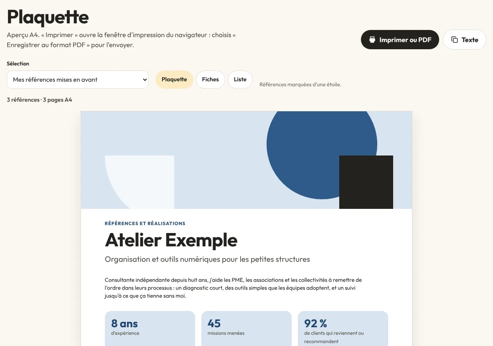
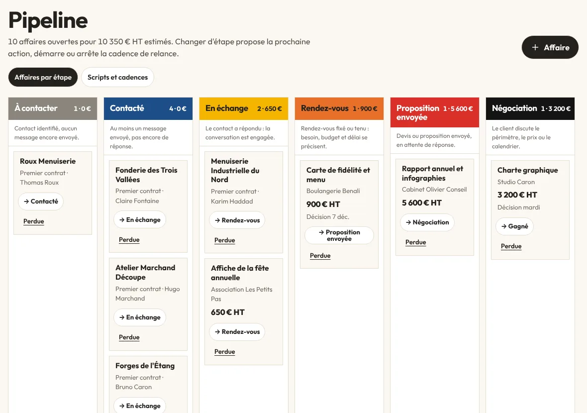
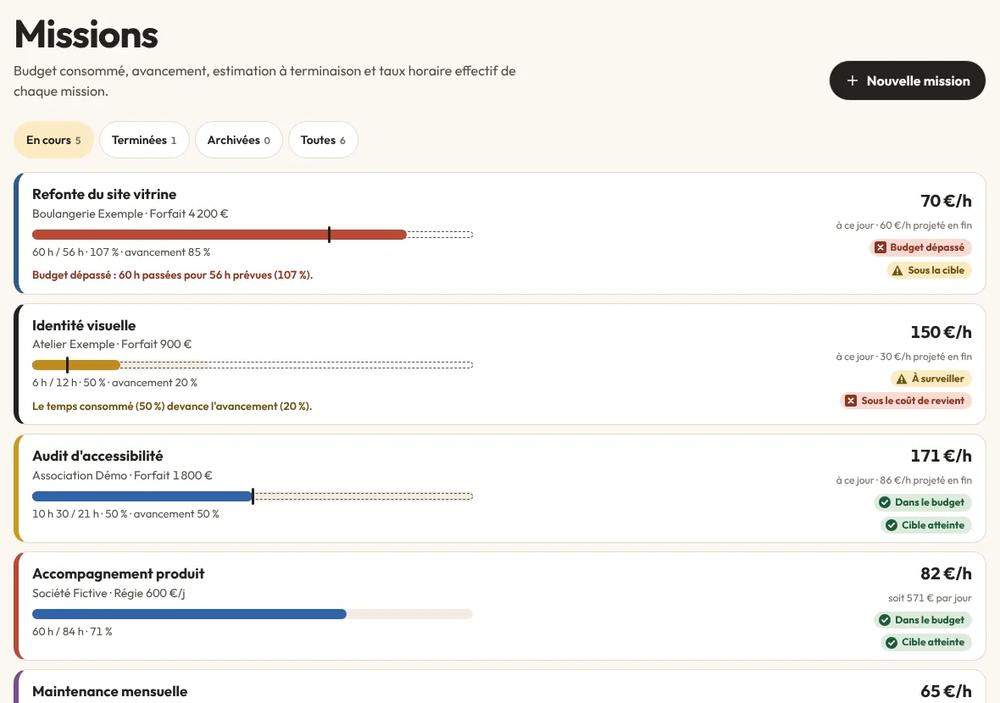

Concept pour les architectes d'intérieur et décorateurs · outils prêts à l'emploi
Du premier appel au projet signé, sans rien perdre en route.
Des outils en ligne déjà prêts pour les architectes d'intérieur et les décorateurs indépendants : un appel découverte préparé, une proposition avec plusieurs options, les références et la plaquette adaptées à chaque prospect, le suivi des contacts et des relances, puis le temps réellement passé sur chaque projet comparé au devis. Ils s'utilisent tels quels dès le premier jour, et je peux les adapter sur mesure à votre façon de travailler.
Chaque démo s'ouvre sans inscription sur un indépendant fictif et des clients fictifs. Elle reste dans votre navigateur et n'envoie rien. Toutes les données affichées sur cette page sont fictives.
Le quotidien
Un premier appel qui part dans tous les sens, des photos de projets éparpillées dans plusieurs dossiers, une proposition refaite à chaque client, des contacts suivis dans la boîte mail.
Ce que cela coûte
Un prospect qu'on oublie de relancer, une proposition sans option qui se compare mal, des références qui ne ressemblent pas au projet, et un chantier de conception qui déborde sans qu'on le voie.
Ce que font les outils
Ils préparent l'appel, mettent les options côte à côte, sortent les bonnes références pour chaque prospect, rappellent qui relancer et comparent le temps passé au budget du devis.
01 · Appel découverte
Un premier rendez-vous préparé en dix minutes
L'objectif de l'appel, les hypothèses à vérifier et un plan minuté, avec une banque de questions classées par phase.
- Questions sur la situation, le besoin, le budget, les délais et la décision
- Objections probables sous la main pendant l'échange
- Une synthèse et une prochaine étape datée à la fin de l'appel

02 · Proposition
Une proposition avec des options, pas un prix unique
Contexte, objectifs, prestations, puis deux ou trois options comparées côte à côte, et un planning.
- Options « essentiel, confort, premium » avec ce que chacune inclut
- Tableau de comparaison et écart de prix calculés
- Propositions à relancer et validité dépassée signalées

03 · Références et plaquette
Les bonnes réalisations pour chaque prospect
Vos projets rangés une fois pour toutes, avec un modèle de fiche « architecture et décoration » : contexte, mission, résultat.
- Filtres par secteur, type de mission, mot-clé et année
- Une sélection par prospect, mise en page en plaquette A4
- Impression ou PDF à joindre à la proposition

04 · Contacts et relances
Chaque prospect à son étape, chaque relance à sa date
Du premier contact à la signature : les affaires par étape, le montant estimé, la prochaine action.
- « À relancer aujourd'hui » chaque matin
- Historique des échanges par contact
- Devis et factures suivis, reste à encaisser

05 · Après la signature
Le temps passé, comparé au devis
Le temps saisi en une ligne ou au chronomètre, projet par projet, face au budget prévu.
- Budget dépassé et temps qui devance l'avancement signalés
- Taux horaire réel de chaque projet
- Dans le pack « chiffrer, facturer, encaisser », avec le devis et la relance des impayés

Prêt à l'emploi, ou sur mesure
Les outils sont prêts : ils s'ouvrent en ligne, sur ordinateur, tablette ou téléphone, et vos données sont synchronisées. C'est un achat unique, sans abonnement ni renouvellement, et chaque outil s'essaie 14 jours gratuitement, sans carte bancaire. Si votre agence demande autre chose, je le construis pour vous.
Pack « Freelance : trouver ses clients »
76 € au lieu de 102 €, six outils, achat unique
- Appel découverte, CRM et prospection, propositions commerciales
- Références et plaquette, calendrier éditorial, suivi des candidatures et appels d'offres
- Chaque outil existe aussi seul, de 12 à 25 €
- Pour le temps passé face au devis, le devis et les impayés : pack « Freelance : chiffrer, facturer, encaisser », 118 € au lieu de 158 €
La version sur mesure
Adaptée à votre agence
- Vos phases de mission (esquisse, avant-projet, suivi de chantier) et vos honoraires
- Vos planches, vos listes de fournitures et le suivi des artisans
- Plusieurs collaborateurs, vos documents et vos exports
Les outils contiennent des données de vos prospects et clients : il vous appartient d'en informer les personnes concernées et de limiter ce que vous gardez. Les données des démos sont fictives et ne quittent pas votre navigateur.
Trente minutes pour voir ce qui vous ferait gagner le plus de temps
Ouvrez les démos, puis dites-moi comment vous travaillez aujourd'hui : je vous dis franchement si les outils prêts à l'emploi suffisent, ou ce qu'une version sur mesure changerait.